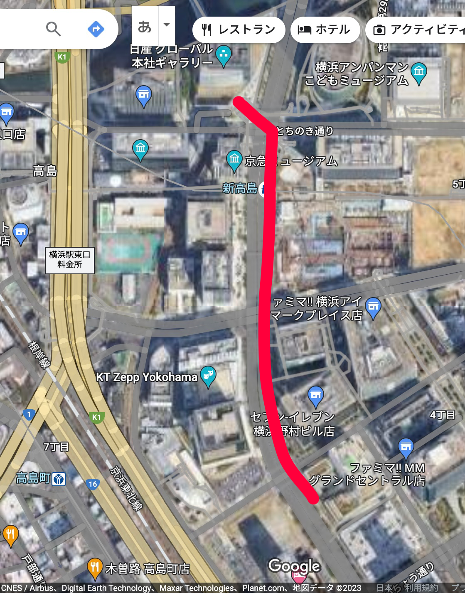
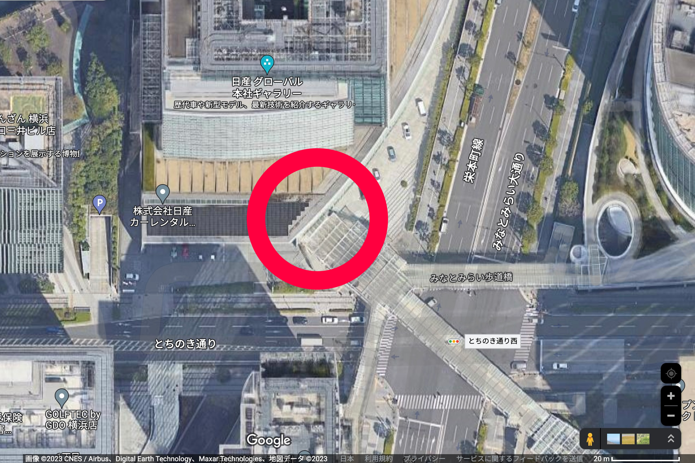
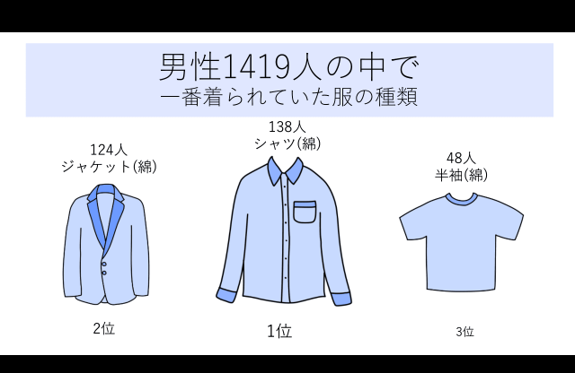
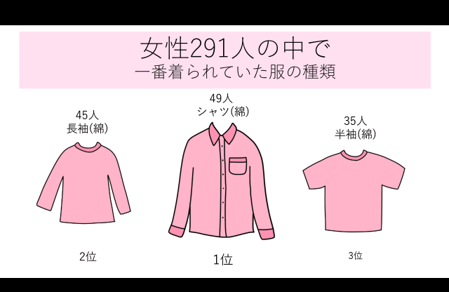
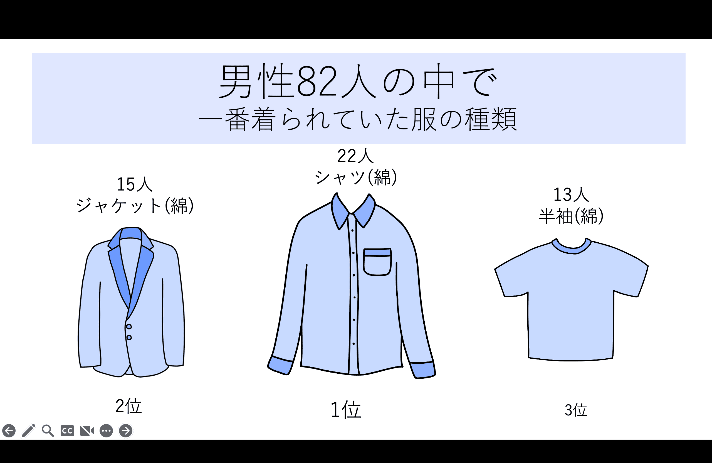
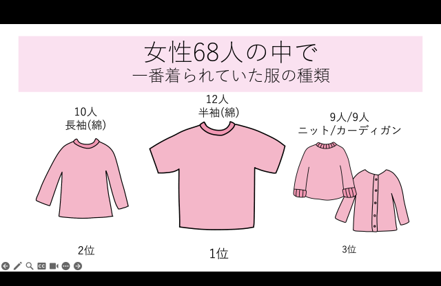

一番上に着ているトップス調査
定点観察と移動観察を行い、一番上に来ているトップスの【種類】【素材】について調査する。
調査結果を男性・女性、大人・子ども、に分類してまとめた。
・調査ルート

神奈川大学みなとみらいキャンパスから
東側の通路を通って、歩道橋下の横断歩道を曲がる。
日産グローバル本社ギャラリーまで。

調査時間：移動観察(10分)を含めて約1時間
＜ 定点観察 ＞
男性が一番上に来ているトップスを約50分間定点観察した結果。

約50分間の定点観測で、1419人の男性の結果を得ることができた。
その結果
1位 138人 シャツ（綿）
2位 124人 ジャケット（綿）
3位 48人 半袖（綿）
という結果となった。
会社の近くで調査したこともありスーツ姿の男性が多かったため、
ジャケット（綿）やシャツ（綿）が多かったと考えられる。
調査を行った日の気温が例日に比べ少し高かったこともあり、半袖（綿）が次いで多かったと考えられる。
女性が一番上に来ているトップスを約50分間定点観察した結果。

約50分間の定点観測で、291人の女性の結果を得ることができた。
その結果
1位 49人 シャツ（綿）
2位 45人 長袖（綿）
3位 35人 半袖（綿）
という結果となった。
女性の調査結果から、他にも結果も得ることができた。
・ワンピース多かった。
（アウターとの組み合わせや、インナーとの組み合わせがしやすい）
・カーディガンなど羽織るものを手に持っている人が多かった。
・丈が短いボトムスを着用している人は比較的トップスが厚着
丈が長いボトムスを着用している人は比較的トップスが薄着
（女性で半袖短パンのような格好の人はいなかった。）
＜ 移動観察 ＞
男性が一番上に来ているトップスを移動中の道のりで約10分間撮影した映像から移動観測した結果。

約10分間の移動観測で、82人の男性の結果を得ることができた。
その結果
1位 22人 シャツ（綿）
2位 15人 ジャケット（綿）
3位 13人 半袖（綿）
という結果となった。
定点観察と同じく、近くの多くの企業、会社が佇んでいる道で調査したこともありスーツ姿の男性が多かったため、
ジャケット（綿）やシャツ（綿）が多かったと考えられる。
調査を行った日の気温が例日に比べ少し高かったこともあり、半袖（綿）が次いで多かったと考えられる。
女性が一番上に来ているトップスを移動中の道のりで約10分間撮影した映像から移動観測した結果

約10分間の移動観測で、68人の女性の結果を得ることができた。
その結果
1位 12人 半袖（綿）
2位 10人 長袖（綿）
3位 9人 ニット/カーディガン（モコモコ）
という結果となった。
調査を行った日の気温が例日に比べ少し高かったこともあり、半袖（綿）が次いで多かったと考えられる。
女性は特に体温調節をするために少し温かくなる長袖や、体温調節しやすいカーディガンなどを来ている人が多かった。
3位はニットとカーディガンというモコモコの生地の2つが同率だった。
少しずつ寒い季節に近づいているからだとも考えられる。
その他目立った例外
・道が広くランニングに適しているため、ランニング中の人
（通気性・機能性に優れたメッシュ素材の服）もいた。
→ みなとみらいは道が広いところが多く、ランニングするのに適している環境が多いため、ランニングウォームの人が多く見られたと考えられる。
・子ども：薄い長袖か半袖
→ 子どもは体温が高いため、温度調節しやすく少し涼しめな服装が多かったと考えられる。
・警備員/作業員などの制服の人
→ 会社や建設中の建物の近くで観測したため。
・校外学習で訪れた制服姿の女子高生が28人
（カーディガンを羽織っている人や持っている人もいた。）
→ みなとみらいは企業が多いため、校外学習などで訪れる学生も多いと考えられる。
まとめ
・みなとみらいは、ランニングに適していたり会社が多かったり、
校外学習やライブに訪れる人もいるため、よりさまざまな服装を
観察することができた。
・服の厚さや素材など、男女差だけでなく世代や訪れている目的に
よって異なるという考察をすることができた。
・定点観察はその場で素早く観察しなければならないため、正確な調査が難しかったが、
移動観察は動画に情報を残しておくことができるため、より正確に時間をかけて調査することができた。